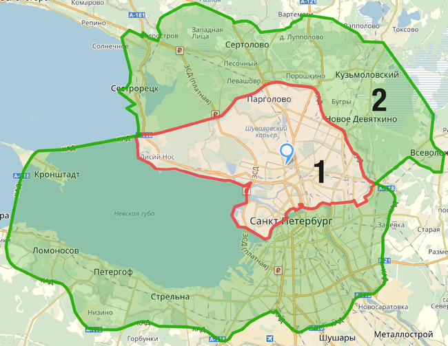

Стоимость доставки зависит от вида доставки, зоны расположения, адреса доставки, веса товара и наличия дополнительных услуг по доставке, таких, как подъем на этаж. Зоны доставки определены индивидуально для каждого гипермаркета «Лайфсист». Обращаем Ваше внимание, что с 28.12.2015 на доставку и остальные услуги из данного раздела не распространяются условия программы лояльности.
Условия доставки
Заказчик обязуется находиться в указанные сроки по месту доставки товара, иметь при себе кассовый и сохранный чеки, накладную доставки, а также обеспечить присутствие иного дееспособного лица, имеющего вышеуказанные документы при невозможности присутствовать лично. В случае невыполнения указанных условий, доставка товара осуществляется Заказчиком самостоятельно или оплачивается повторно Исполнителю.
Условия доставки действуют при совершенной оплате и подтвержденном заказе оператором.
Карта зон доставки в г. Санкт-Петербург
Условия доставки распространяются на товары, купленные в магазинах «Лайфсист», интернет-магазине http://www.lifesist.ru или заказанные по телефону (8(800)555-35-35). Границы зон доставки смотрите на карте:

Виды и стоимость доставки товара в зависимости от его веса и зоны доставки.
«Стандартная Доставка»
Стандартная доставка осуществляется на следующий день, на временные интервалы:
- с 09:00 до 18:00 оформляется до 18:00 в день оформления услуги;
- с 16:00 до 23:00 оформляется до 21:00 в день оформления услуги;
Оформить доставку товара на любой день, кроме следующего дня за днем оформления услуги доставки, можно с 08:00 до 21:00 на любые временные интервалы.
| Вес (кг) / м.куб. | 1 ЗОНА (руб.) | 2 ЗОНА (руб.) | За пределы границ 2 зоны (руб./км) |
|---|---|---|---|
| до 100 кг/ 0,7 м.куб. | 399 | 699 | 30 |
| до 300 кг/ 2 м.куб. | 599 | 899 | 30 |
| до 700 кг/ 5 м.куб. | 899 | 1399 | 30 |
| до 1500 кг/ 10 м.куб. | 1399 | 1799 | 30 |
«Доставка в день покупки»
- Оформить услугу на текущую дату можно с 08:00 до 17:00.
- «Доставка в день покупки» осуществляется в течение 5 (пяти) часов с момента оформления услуги.
- Текущий час оформления услуги округляется до 30 мин. в большую сторону.
- Выполняется в пределах 2 (двух) зон доставки товара магазинов.
| Вес (кг) / м.куб. | 1 ЗОНА (руб.) | 2 ЗОНА (руб.) | За пределы границ 2 зоны (руб./км) |
|---|---|---|---|
| до 100 кг/ 0,7 м.куб. | 699 | 1299 | 30 |
| до 300 кг/ 2 м.куб. | 899 | 1599 | 30 |
| до 700 кг/ 5 м.куб. | 1199 | 1899 | 30 |
| до 1500 кг/ 10 м.куб. | 1699 | 2299 | 30 |
«Удобный час»
- Доставка на любой день, кроме дня покупки, оформляется с 08:00 до 23:00 на любой период с 12:00 до 24:00.
- При превышении границы 2 (двух) Зон доставки: каждые 30 км. от границы 2 (второй) Зоны, увеличивают ближайший интервал доставки на 1 час.
- Текущий час оформления заказа округляется до ближайшего часа в большую сторону.
| Вес (кг) / м.куб. | 1 ЗОНА (руб.) | 2 ЗОНА (руб.) | За пределы границ 2 зоны (руб./км) |
|---|---|---|---|
| до 100 кг/ 0,7 м.куб. | 899 | 1499 | 30 |
| до 300 кг/ 2 м.куб. | 1099 | 1799 | 30 |
| до 700 кг/ 5 м.куб. | 1399 | 1999 | 30 |
| до 1500 кг/ 10 м.куб. | 1899 | 2399 | 30 |
«Удобный час в день покупки»
- Оформление услуги на текущую дату возможно с 08:00 до 17:00.
- Ближайший временной интервал доступен не ранее чем через 5 (пять) часов после оформления услуги, в пределах 2 (двух) зон доставки товара.
- При превышении границы 2 (двух) Зон доставки: каждые 30 км. от границы 2 (второй) Зоны, увеличивают ближайший интервал доставки на 1 час.
- Текущий час оформления заказа округляется до 30 минут в большую сторону.
| Вес (кг) / м.куб. | 1 ЗОНА (руб.) | 2 ЗОНА (руб.) | За пределы границ 2 зоны (руб./км) |
|---|---|---|---|
| до 100 кг/ 0,7 м.куб. | 1169 | 1949 | 30 |
| до 300 кг/ 2 м.куб. | 1429 | 2339 | 30 |
| до 700 кг/ 5 м.куб. | 1819 | 2599 | 30 |
| до 1500 кг/ 10 м.куб. | 2469 | 3119 | 30 |
Тариф на транспортировку за пределы 2-й зоны рассчитывается как:
Тариф 2 зоны + (километраж от границы 2-й зоны до адреса доставки) х 30 руб. Доставка товара на расстояние свыше 50 км осуществляется в индивидуальном порядке.
Данные тарифы действительны при доставке товара с суммарным весом не более 1500 кг. При заказе доставки товара с суммарным весом больше указанного, каждые 1500 кг груза тарифицируются как отдельная доставка.
Доставка товара осуществляется до входной двери в подъезд (офис) или калитки загородного дома.
При заказе транспортировки легких и объемных товаров, таких как минеральная вата, минеральная плита, пенополистирол, и другие товары, каждые 10 м.куб. груза тарифицируются как отдельная доставка автомобилем грузоподъемностью 1,5 т. Объемный товар тарифицируется из расчета 1 м.куб. = 150 кг.
Транспортировка и подъем товара длиной более 3,5 м осуществляются по согласованию с Отделом транспорта (Транспортной компанией).
При необходимости доставки товара:
- на расстояние свыше 30 км. от границы 2 (второй) зоны магазина;
- объемом свыше 30 м.куб.;
- весом свыше 3000 кг;
Дата доставки и время ее выполнения в этом случае согласовывается с Отделом транспорта (Транспортной компанией).
Дополнительные услуги: подъем товара
Стоимость услуг по подъему товара покупателям рассчитывается исходя из веса товара.
Стоимость подъема товара на 1 этаж зависит от веса товара, но не менее минимальной стоимости подъема.
Стоимость услуг по подъему товара на лифте зависит от веса товара, но не менее минимальной стоимости подъема товара.
Минимальная итоговая стоимость подъема товара - 300 рублей.
Стоимость подъема товара:
| Вес/тип | На лифте | Пешком |
|---|---|---|
| до 100 кг | 300 руб. | 300 руб.* |
| Каждые следующие 100 кг | 100 руб. | +100 руб./этаж |
*300 руб. за 1-ый этаж + 100 руб./каждый последующий этаж.
Вес заказа, при котором осуществляется подъём товара в квартиру без дополнительной оплаты – до 10 кг.
Подъем товара осуществляется в прихожую квартиры или загородного дома.
В случае несоответствия габаритов товара при его подъеме в квартиру размерам лестничных (дверных) проемов, либо невозможности заноса (подъема) товара из-за загромождения дверных проемов (лестничных пролетов) иными предметами, приемка товара Заказчиком осуществляется у двери подъезда дома. Обязанности по доставке товара считаются исполненными. Возврат денежных средств за подъем товара производится Исполнителем на основании письменного заявления Заказчика в доле, приходящейся на товар, подъем которого не производился.
Перемещение товара по квартире или загородному дому не осуществляется.
Дополнительная разборка товара (мебели) для подъема в квартиру Исполнителем не производится. Разборка товара (мебели) должна учитываться Заказчиком и согласовываться с продавцом при заключении Договора купли-продажи.
Подъем единицы товара длиной более 3,5 метров или весом более 70 килограмм осуществляется по согласованию с Отделом транспорта (Транспортной компанией).
Более подробную информацию о дополнительных услугах (подъем на этаж и т.д.) узнавайте в отделе сервиса по телефону 8(800)555-35-35.
Условия и тарифы описанные на странице "Доставка и оплата" применяются и при обратных доставках.
Все цены на услуги указаны с учетом НДС.
Форма оплаты товара зависит от способа приобретения товара.
- Если Вы приобрели товар в гипермаркете и оплачиваете его на кассе, Вы можете использовать как наличные деньги, так и банковскую карту. При этом не имеет значения, оформили ли Вы доставку или планируете забирать товар самостоятельно.
- Если Вы оформили заказ в Интернет-магазине и предпочитаете забрать покупку из магазина, то оплатить товар Вы можете в Пункте Выдачи Заказов наличными средствами или банковской картой. Для оплаты Вам нужно обратиться к кладовщику-кассиру для получения "Листа оплаты" или распечатать его самостоятельно из личного кабинета на сайте, пройдя в соответствующий заказ в разделе "Мои заказы".
- Если Вы оформили заказ в Интернет-магазине или по телефону с доставкой, оплата может осуществляться курьеру, как наличными, так и банковской картой при доставке товара. Однако Вы можете оплатить этот товар на кассе магазина отгрузки также наличными или же банковской картой. Но сделать это необходимо до наступления даты Доставки.
- При оформлении заказа в Интернет-магазине также доступна оплата Банковской картой. Для оплаты заказа достаточно выбрать пункт “Оплатить заказ банковской картой online” и следовать инструкциям Банка-Партнера. Заказ можно оплатить сразу же после подтверждения, либо из личного кабинета в течение 24 часов с момента оформления. Для оплаты заказа банковской картой необходимо ввести данные на защищенной странице процессингового центра Банка и нажать «Оплатить». Если карта поддерживает технологию 3D Secure, произойдет перенаправление на страницу банка-эмитента для ввода дополнительного одноразового пароля и завершения оплаты. К оплате принимаются банковские карты VISA, MasterCard, МИР, выпущенные банками стран СНГ.
При получении товара проверьте состояние упаковки, соответствие номенклатуре, количеству, внешнему виду товара и комплектность поставки.
Вы оплачиваете стоимость заказа только тогда, когда убедились в том, что заказанный товар полностью Вас устраивает. (В случае если у вас был предоплаченный заказ, для получения товара Вам понадобится предоставить документ удостоверяющий личность, либо озвучить «Код подтверждения» полученный по смс-уведомлению).
Без "Кода подтверждения" отгрузка товара невозможна. “Код подтверждения” - идентификация Вашего платежа.
Для получения заказа обязательно сообщите его кладовщику-кассиру в пункте самовывоза или курьеру ТК при доставке (Если заказ был предоплачен, повторная оплата не понадобится).
Заказы выдаются только при наличии документа удостоверяющего личность. В случае если ФИО получателя указанного в заказе не совпадает с предъявленным документом, удостоверяющем личность, в выдаче заказа может быть отказано.
В момент получения заказа Вы можете отказаться от любого товара или всего заказа без объяснения причин.
Оплата товара принимается только в рублях, как наличными, так и при помощи пластиковых карт.
Обращаем Ваше внимание, что в случае предоставления Вами адреса электронной почты или абонентского номера, в соответствии с п. 2 ст. 1.2 ФЗ №54 от от 22.05.2003г., Продавец вправе направить электронную форму кассового чека либо ссылку на печать электронной формы чека на указанный Вами электронный адрес или абонентский номер.
Для юридических лиц доступна оплата по наличному расчёту (на сумму не более 100 000 рублей) и безналичному расчету. Для этого необходимо получить счет в отделе Сервиса магазина или оформить заказ на сайте. С подробными условиями можно ознакомиться в разделе "Для юр. лиц".
Дополнительная информация по вопросам доставки и оплаты размещена на странице "Помощь".